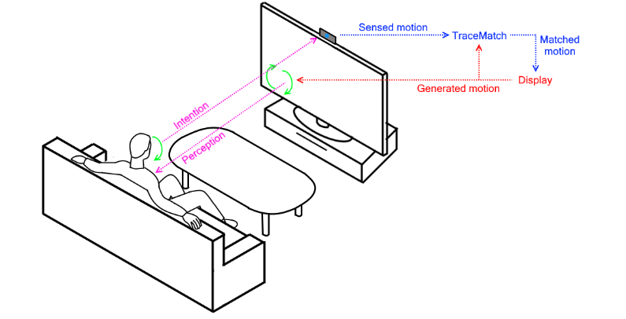

Research
I am a Lecturer (Assistant Professor) in Human-Computer Interaction at the University of Bath.
My research aims to push the boundaries of how users interact with computer interfaces by methodically researching, developing, and evaluating interactive systems which leverage novel input methods. My research includes novel interaction techniques, computer vision-based gestural interaction, eye tracking interaction, wearable technologies, and interaction in extended reality (AR/VR).
I have a broad publication record in premiere international conferences such as CHI, UIST, UbiComp/IMWUT, and TOCHI and my work has been covered by media outlets such as the BBC, New Scientist, Reuters, the Telegraph, and Wired.
Previously, I was an EPSRC Doctoral Prize Researcher working in the Interactive Systems group at Lancaster University. My PhD investigated motion-coupling techniques using computer vision to enable interaction with any body part or object under the supervision of Prof. Hans Gellersen. During my PhD I undertook an internship at FXPAL in Palo Alto, California with Don Kimber and Patrick Chiu.
Selected Publications

Reactive Video: Adaptive Video Playback Based on User Motion for Supporting Physical Activity
C. Clarke, D. Cavdir, P. Chiu, L. Denoue, D. Kimber
ACM UIST 2020
Read More
BimodalGaze: Seamlessly Refined Pointing with Gaze and Filtered Gestural Head Movement
L. Sidenmark, D. Mardanbegi, A. Ramirez Gomez, C. Clarke, H. Gellersen
ACM ETRA 2020
Read More
Outline Pursuits: Gaze-assisted Selection of Occluded Objects in Virtual Reality
L. Sidenmark*, C. Clarke*, X. Zhang, J. Phu & H. Gellersen (* equal contribution)
Proceedings of the 2020 CHI Conference on Human Factors in Computing Systems (CHI '20)
Read More
MatchPoint: Spontaneous Spatial Coupling of Body Movement for Touchless Pointing
C. Clarke & H. Gellersen
30th Annual ACM Symposium on User Interface Software & Technology (UIST'17)
Read More
Motion Correlation: Selecting Objects by Matching Their Movement
E. Velloso, M. Carter, J. Newn, A. Esteves, C. Clarke & H. Gellersen
ACM Transactions on Computer-Human Interaction (TOCHI)
Read More

TraceMatch: a computer vision technique for user input by tracing of animated controls
C. Clarke, A. Bellino, A. Esteves, E. Velloso & H. Gellersen
Proceedings of the 2016 ACM International Joint Conference on Pervasive and Ubiquitous Computing (UbiComp'16)
Read More